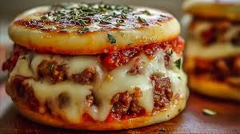

Foodies Adda
Delicious Meals , Delivered Fresh
Our Special Dishes

Cheesy American chickenburger
An American cheese chicken burger featuring a chicken patty, melted American cheese, and often served on a soft bun with toppings like lettuce, onions, and sauces, embodying a classic, comforting American fast-food style.

Kurkure Pizza
Try our unique Kurkure pizza that combines traditional pizza with the spicy, crunchy, and tangy taste of Kurkure corn puffs. It features crunchy Kurkure pieces and a creamy Kurkure sauce, along with typical spicy toppings, offering a "chatpata" (tangy) and crunchy experience.

The Pizza Burger
Have a dish that combines a burger and a pizza by topping a seasoned ground beef patty with pizza sauce, mozzarella cheese, and other pizza toppings like pepperoni, and serving it on a bun. It offers a flavorful blend of both classic comfort foods, featuring zesty tomato sauce, a juicy meat patty, melted cheese, and familiar pizza fixings.

Kulhad Pizza
Have a bite on Kulhad pizza where pizza ingredients, such as sauce, bread pieces, vegetables, and cheese, are served in a traditional baked clay cup called a "kulhad" instead of a regular bread base. This unique dish combines classic pizza flavors with the rustic, earthy feel of the clay kulhad, resulting in a warm, mini-deep-dish style pizza.

Cappuccino
Enjoy your coffee drink made with a shot of espresso, hot steamed milk, and a thick layer of milk foam, often in roughly equal thirds. It's known for its creamy, balanced, and rich flavor, with a stronger coffee taste than a latte and a distinct, airy foam topping.
About Foodies Adda
Welcome to Foodies Adda, where every bite blends taste, freshness, and comfort. We serve an exclusive range of handcrafted snacks — from gourmet sandwiches and crispy fries to signature wraps and fusion chaats — all made with premium ingredients and authentic flavors. Our space is designed for warmth and relaxation, making it perfect for casual meet-ups, quick breaks, or peaceful solo time. At Foodies Adda, we believe in creating experiences, not just meals. Every snack is prepared with care, balancing modern taste with traditional love. Step in, unwind, and treat yourself to the finest snacking experience in town — because at Foodies Adda, every bite tells a delicious story.
Contact us
- phone no : 23243243
- email : foodiesadda@gmail.com